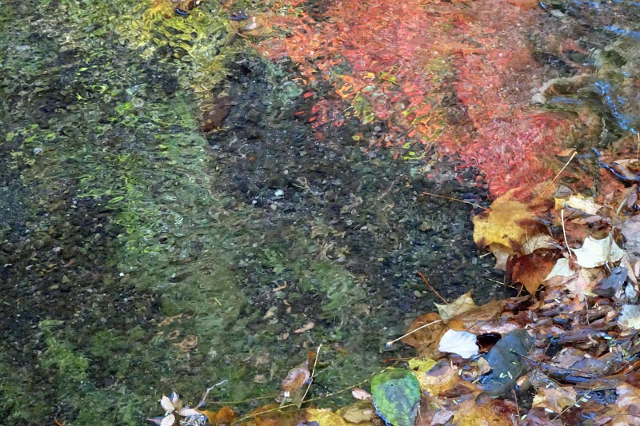

オルウィン: ヴァイオリンとピアノのためのソナチネ
前回のウォルトンのヴァイオリンソナタについては、こちらのアルバムの演奏もよいと思った。20世紀イギリスのヴァイオリンとピアノの曲を集めたアルバムである。冒頭に置かれたウォルトンの次に、ウィリアム・オルウィンの『ソナチネ』が入っている。オルウィンはウォルトンの3歳下、穏健な印象のある作曲家だが、この曲も名前の通り小規模で形式も整っており、配慮の行き届いた小品という感じである。冒頭の主題が耳に残る。
William Alwyn: Violin Sonatina
Clare Howick (vn)
Simon Callaghan (pf)
(2019)
このアルバムには他にケネス・レイトンの『ソナタ第1番』と、ゴードン・ジェイコブ、レノックス・バークリー、アラン・ロースソーンという3人の小品が収められている。皆1970-80年代まで存命だった最近の作曲家だが、ここにあるのは肩の凝らない音楽ばかり。ロースソーンの "Pierrette: Valse Caprice" という小品は、ロースソーンにしては甘口でびっくりするが、解説によると最初の妻と結婚したときのプレゼントとして書かれたそうで、それなら納得である。ちなみにロースソーンの映画音楽集を聴いていたら同じ曲が出てきたので再度驚いた。『アンクル・サイラス』という1947年の映画である。気に入っていたのかもしれない。
下の "Crépuscule(黄昏)" と題されたアルバムにもオルウィンの曲が3曲入っている。フルート・ヴィオラ・ハープのトリオによる演奏で、アルバムタイトルでもある『クレプスキュール』はハープ独奏、『ナイアーデス』("Naïades") はフルートとハープ、『2つの民謡』はヴィオラとハープの曲である。印象派を思わせる柔らかい色彩の曲。どれもハープが入っているわけだが、オルウィンには『ハープ協奏曲 "Lyra Angelica"』という隠れた名作もある。中ではやや長め（約12分）の『ナイアーデス』が変化に富んでいる。ナイアーデスとは、ギリシャ神話における川や泉の妖精の総称だそうである（サルマキスやレーテーなど個別に知られている通り）。規模は違うがラヴェルの『ダフニスとクロエ』を想起しないではいられない。
William Alwyn: Naïades
Emma Halnan (fl)
Heather Wrighton (hp)
(2020)

(Nov. 25, 2023)